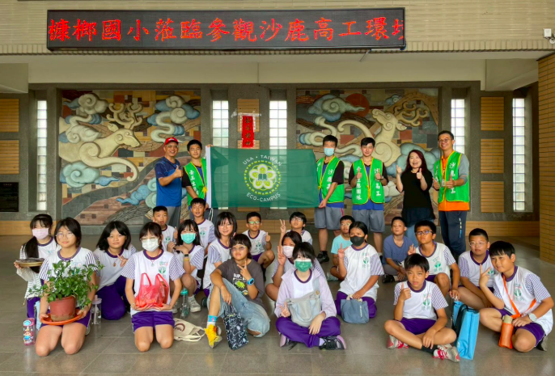
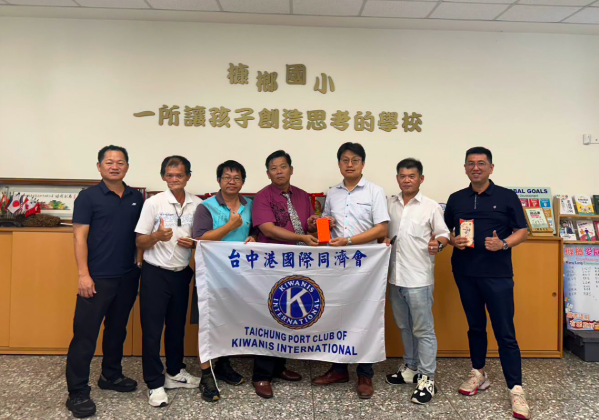
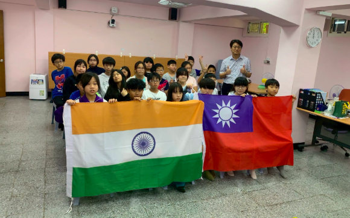
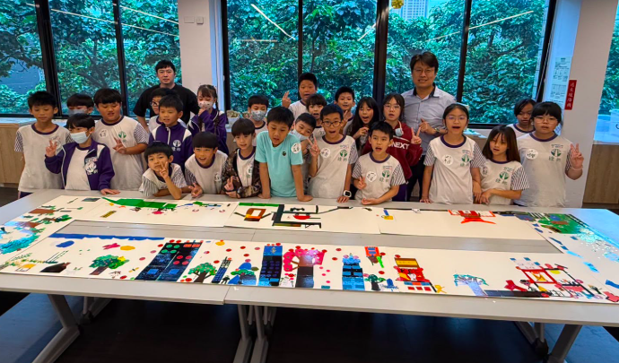
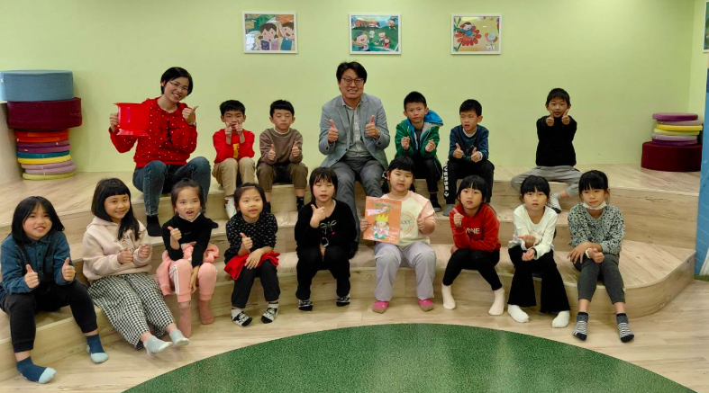
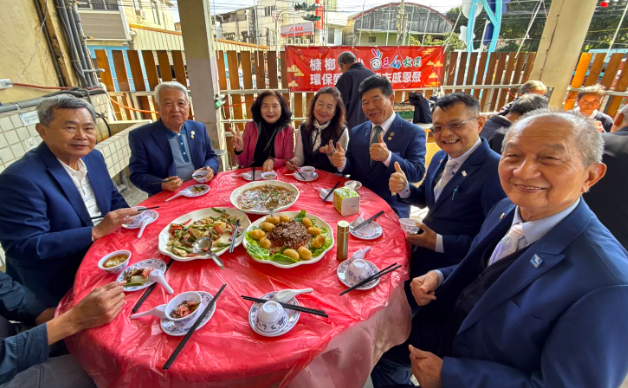

A Green Afternoon at Shalu沙鹿高工綠色生態參訪
Compost piles, plant cuttings, and a bag of homemade soil to take home — a hands-on afternoon of ecology with the big students at Shalu Vocational High.
落葉堆肥、植物插枝，還有一袋親手篩好、帶回家的土壤——在沙鹿高工大哥哥們帶領下的綠色生態午後。
Read the full story
Kindness from the Kiwanis Club台中港國際同濟會的愛心
A welfare fund so no child has to worry about school, and a set of bright new safety vests for the crossing guards — two gifts from the Kiwanis Club.
一筆讓孩子安心就學的社福金，加上一批亮眼的全新導護背心——來自台中港國際同濟會的兩份禮物。
Read the full story
Talking About the Planet with Friends in India與印度學生的 SDGs 國際交流
Reduce, reuse, recycle. Our sixth graders met students from Him Academy in India to share how each country looks after the Earth.
減量、再利用、回收。六年級的孩子與印度 Him Academy 的學生連線，分享兩國如何照顧我們的地球。
Read the full story
Art, Play, and Our Hometown藝童玩美 · 走進美學殿堂
A painting brought to life on stage, an art-history board game, and a chance to draw a hundred years of Qingshui — three ways into the world of art.
被搬上舞台「立體化」的畫作、一場藝術史桌遊，還有把清水百年風華畫下來的機會——三種走進藝術世界的方式。
Read the full story
A Visit About the Future of the Earth國際婦女會參訪 · 永續環境在地實踐
The International Women's Association came to see how a small school turns the word "sustainability" into something children do every day.
國際婦女會來訪，看一所小學如何把「永續」這個詞，變成孩子每天都在做的事。
Read the full story
Our First International Exchange第一次國際交流活動 · 連線印尼
Thirty seconds in front of the camera, in English, with new friends in Indonesia watching. Excited and a little nervous — and braver by the end.
面對鏡頭、用英文、三十秒——印尼的新朋友正看著。既期待又有點緊張，但到最後，變得更勇敢了。
Read the full story
Two Awards at the Food & Farming Festival食農嘉年華 · 雙喜臨門
Taichung named KangLang an Outstanding Food-and-Farming School, and named Principal Wang a Food-and-Farming Champion. Two honours in one day.
台中市頒給槺榔「食農教育績優學校」，也頒給勝忠校長「食農教育推手獎」。一天，兩份肯定。
Read the full story
How to Learn Well親職教育講座 · 有效學習的攻略
A talk for parents on how children really learn — from the 1200-word English handbook, recorded word by word, to a weekly vocabulary check.
一場給家長的講座，談孩子如何真正學會——從逐字錄音的英語 1200 字手冊，到每週的單字檢測。
Read the full story
An English Picture-Book Storytime英文繪本故事班正式開跑
Listen first, read later. A new storytime class gives younger children "English ears" through funny, magical, exciting picture books.
先聽說、後讀寫。一個新的繪本故事班，用幽默、魔幻、刺激的故事，幫中低年級的孩子養出「英文耳朵」。
Read the full story
The First Morning of a New Term開學日 · 校長的三個叮嚀
Three reminders, two notes, and one wish — the principal's welcome on the first day back, and a quiet idea: real learning is what you can use.
三個叮嚀、兩個提醒、一個祝福——校長在開學第一天的歡迎詞，還有一個安靜的想法：真正的學習，是你用得出來的學習。
Read the full story
Our Student Reporters on National TV小記者調查隊影片上架
Four KangLang student reporters interviewed a fishing port and a military village — and their "Culture Qingshui" videos are now on a national channel.
四位槺榔小記者採訪了漁港與眷村，他們的「文化清水」影片，現在登上了國語日報的探索頻道。
Read the full story
A Year-End Feast in the Schoolyard環保愛地球 · 歲末感恩聚
A real banquet under the trees to thank the school's eco-helpers and character stars, just before the New Year — learning you can taste.
過年前，在校園的樹下辦一場真正的桌菜，謝謝學校的環保小尖兵與品格之星——一種嚐得到的學習。
Read the full story